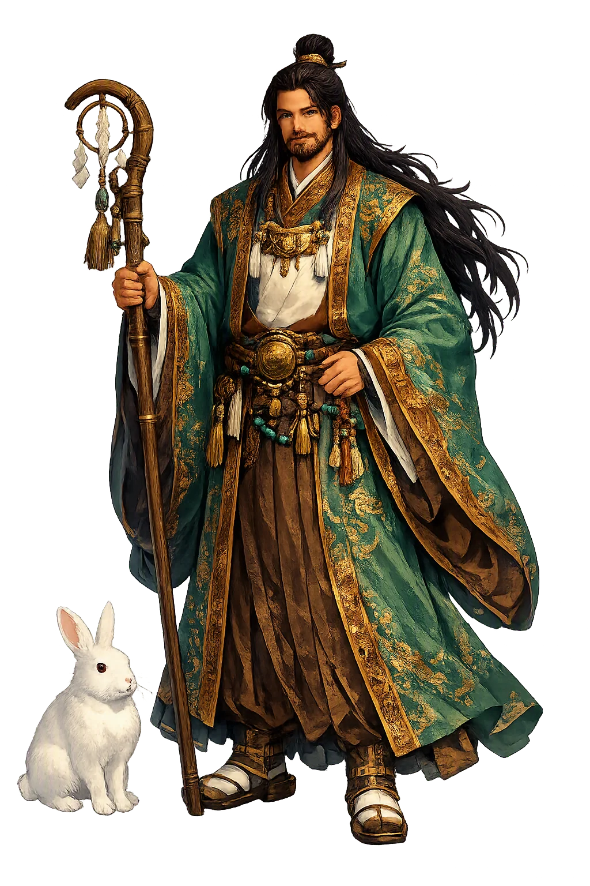
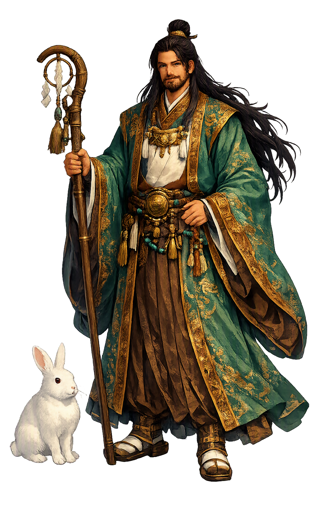

The Authentic Orthography
Nation-building, Marriage · Great land master

Unicode restoration and ASCII comparison
大国主
The name in its original Japanese form. Ōkuninushi (大国主) is attested in the source tradition — “Great land master”. Its original diacritics and script distinctions carry the full phonetic and orthographic weight of the source tradition.
okuninushi
Reduced to plain okuninushi, the name loses everything that made it specific: original diacritics and script distinctions. What remains is an ASCII string that machines can parse but that no longer speaks with its original voice.
Ōkuninushi
The Unicode restoration recovers what ASCII flattened. Ōkuninushi restores original diacritics and script distinctions, returning the name to its original written dignity. The domain encodes to Punycode, but the browser displays the truth.
Ōkuninushi.com → xn--kuninushi-uxb.com
The non-ASCII characters in Ōkuninushi are encoded while the ASCII remains visible. To the DNS, it is Punycode. To humanity, it is Ōkuninushi.
How Ōkuninushi is preserved in writing
A bespoke provenance study for Ōkuninushi is being prepared by the PUNICODEX scholarly team.
Contribute scholarly provenance →Owned, ideal, and ASCII forms of Ōkuninushi
Ōkuninushi
Restores 大国主. The live temple domain — ōkuninushi.com.
okuninushi
Flattens 大国主. The plain ASCII fallback — what DNS and legacy systems see.
How Ōkuninushi was spoken
Nation-Building & Marriage
Ōkuninushi — the Great Land-Master — is the earthly sovereign of Japanese myth: the heir of Susanoo who subdued wild Izumo, built it into a nation with the dwarf-god Sukunabikona, and codified medicine, agriculture and the rites of marriage. His was the visible world — Ashihara no Nakatsukuni, the Central Land of Reed-Plains — until he ceded it to the heavenly line of Amaterasu in the act of statecraft the chronicles call kuni-yuzuri, the transfer of the land.
With the dwarf god Sukunabikona he “made the land”, binding the borders of the Reed-Plain in the Kojiki’s land-building cycle.
He survives Susanoo’s underworld trials to win Suseri-hime and takes the Yakami bride, sealing rule through union (Kojiki).
Remembered as a healer: with Sukunabikona he teaches the medicines and incantations that cure both men and beasts.
Stories of Ōkuninushi
Ōkuninushi's cycle, preserved in the Kojiki (712) and the Nihon Shoki (720), is the longest and most novelistic narrative in Japanese myth — a story of escape, ordeal, sovereignty and renunciation at the meeting-point of earth and heaven.
In the Kojiki (Book I), a hare from the isle of Oki tricks the wani sea-beasts into forming a bridge, is flayed for the deception, and meets the eighty cruel brothers of Ōnamuji, who mockingly prescribe a bath in salt sea-water — agony for its wounds. The youngest brother, Ōnamuji (later Ōkuninushi), advises instead a rinse in fresh river water and a roll in the pollen of katami, the cattail rush; the hare is healed. Grateful, the hare prophesies that Ōnamuji — not his eighty brothers — will win the hand of the princess Yakami-hime of Inaba. It is the first medical prescription in Japanese myth, and the deed that marks the future land-master out from his rivals.
Fleeing his brothers' repeated attempts to kill him, Ōnamuji descends to Ne-no-Kuni, the root-land of Susanoo, as the Kojiki (Book I) relates. There he loves Susanoo's daughter Suseribime, and the storm-god tests him: a night in a hall of snakes, a night in a hall of centipedes and wasps — each survived through Suseribime's protective scarves — and a burning meadow where a mouse leads him to safety underground and retrieves the arrow Susanoo had fired. When Ōnamuji at last washes the great god's hair and steals away with Suseribime, Susanoo's sword, bow and heavenly lute, the pursuing god yields and proclaims him Ōkuninushi-no-kami, Great Land-Master, bidding him drive out his brothers and rule the land.
While Ōkuninushi labours to order the land, the Kojiki (Book I) tells, a tiny god arrives across the waves in a skiff of kagami pod-husks, wearing the skin of a moth: Sukunabikona, son of the great producer Kamimusubi (the Nihon Shoki variants name Takamimusubi). The two make and consolidate the land together, and devise the arts of medicine and protective magic for gods, men and beasts. When the work is done, Sukunabikona departs for Tokoyo no kuni, the far land beyond the sea, leaving Ōkuninushi to guard the realm they built.
When Amaterasu resolves that her line shall rule the Central Land of Reed-Plains, the Kojiki (Book I; cf. the Nihon Shoki, Age of the Gods scrolls) records that the warrior-god Takemikazuchi is sent to Izumo, where he thrusts his sword into the shore and demands Ōkuninushi's answer. The land-master defers to his sons: Kotoshironushi consents at once, while Ajisuki-takahikone resists and is subdued in a divine wrestling-bout. Ōkuninushi then cedes the land — on terms: a grand palace is to be built for him with pillars raised high and crossbeams thick, and his worship is to be perpetuated by the heavenly line itself. That promised palace is Izumo no Ōyashiro, the Grand Shrine of Izumo, and the treaty-in-myth is remembered as kuni-yuzuri.
The Ōkuninushi cycle is a treaty written as myth. The 8th-century mythographers of the Yamato court preserved, almost lovingly, a rival sovereignty — an earth-line descended from Susanoo that owned the visible world — and then sanctified its surrender to the sun-line of Amaterasu. What Ōkuninushi received in exchange is telling: not power but cult, the towering shrine and the empire's perpetual worship. He is therefore the god of everything the heavenly line does not do — healing, farming, matchmaking, the pragmatic order of the reed-plain. Many scholars read the cycle as encoding real negotiations between Yamato and the old Izumo region; whether charter or memory, it makes Ōkuninushi the most humane of sovereigns: a ruler who learned kingship through ordeals beneath the earth, and who gave up his kingdom so that his land — and his god — could endure.
Enter Extended Lore